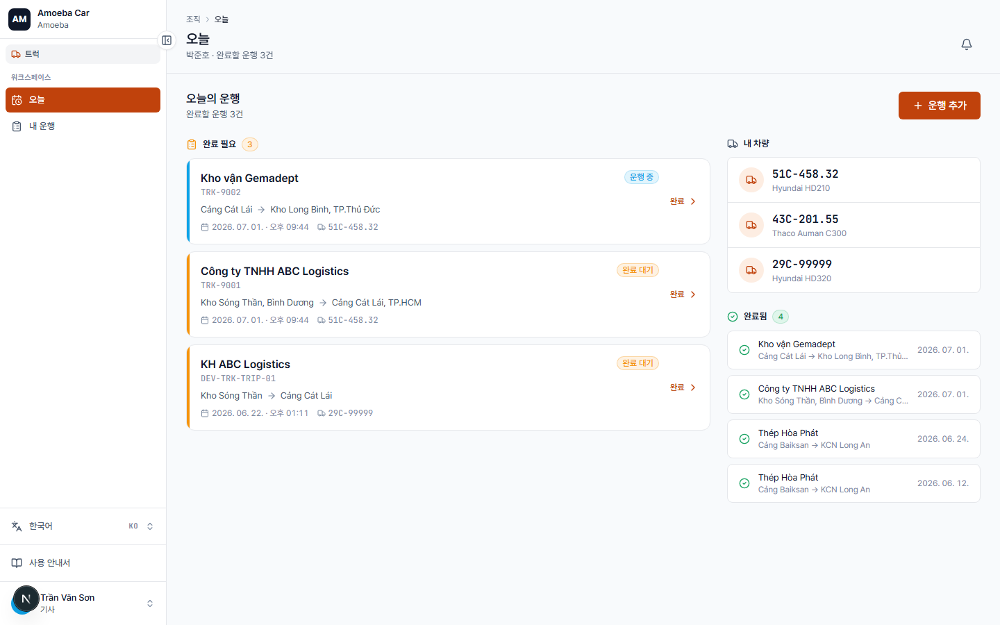

트럭 — 기사 화면 개요
- 대상
- 트럭 부서 기사
- 기기
- 휴대폰(PWA) 중심, PC에서도 사용 가능
트럭 기사 화면은 운행 완료에 초점을 둡니다 — 승용차처럼 수락/거절 단계가 없습니다. 완료할 운행을 확인하고, 종료 시 수치를 기록하며, 완료된 운행을 다시 볼 수 있습니다.

트럭 기사 화면은 운행 완료에 초점을 둡니다 — 승용차처럼 수락/거절 단계가 없습니다. 완료할 운행을 확인하고, 종료 시 수치를 기록하며, 완료된 운행을 다시 볼 수 있습니다.
